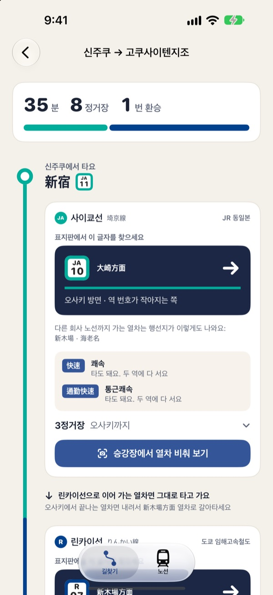
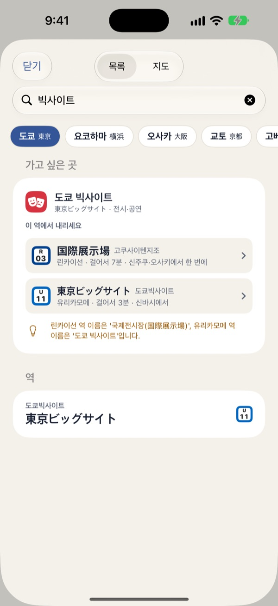
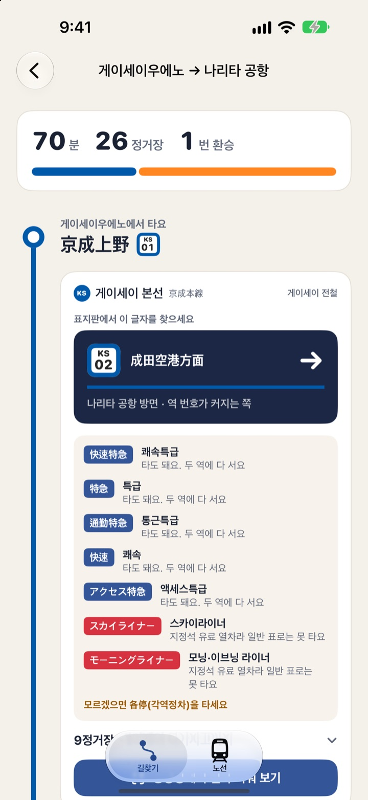
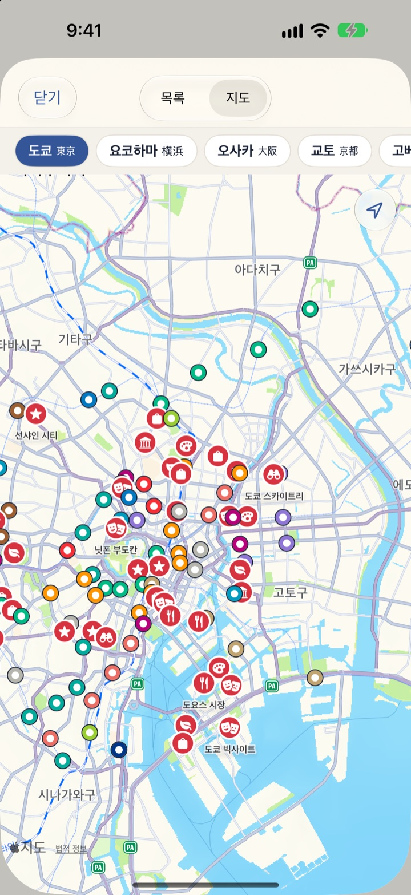

일본 지하철에서
이 열차 타도 될까요?
일본 역 전광판에는 내가 내릴 역이 없습니다. 열차 종류와 끝나는 역만 보입니다. 일본길찾기는 가는 길을 알려 주고, 승강장에서 카메라로 비추면 눈앞의 열차를 타도 되는지 말해 줍니다.
모든 기능이 무료입니다. 회원가입과 광고가 없습니다.

전광판을 비춰 보세요
京成上野 승강장에 서 있다고 해 볼게요. 내릴 역을 고른 뒤 전광판의 열차를 눌러 보세요. 앱이 카메라로 읽었을 때 내리는 판정과 같은 규칙입니다.
急行가 내 역에 서는지, 전광판만 봐서는 모릅니다
같은 승강장에 各停, 急行, 快速가 번갈아 들어오고, 행선지는 처음 듣는 역 이름입니다. 일단 탔다가 내 역을 휙 지나치거나, 지정석 요금이 드는 열차에 올라타기도 합니다. 일본길찾기는 탈 열차를 미리 알려 주고, 승강장에서는 카메라 한 번으로 확인해 줍니다.
가고 싶은 곳만 찾으면 됩니다
빅사이트, 센소지, 도톤보리처럼 가고 싶은 곳을 한국어로 찾으면 내려야 할 역과 걸어가는 시간을 알려 줍니다. 관광지 187곳이 들어 있습니다.
역 이름은 한국어, 일본어, 영어, 역 번호 어느 것으로 찾아도 됩니다.

헷갈리는 열차는 미리 알려 줍니다
어느 방면 열차를 타는지 역 표지판에 적힌 일본어 그대로 보여 줍니다. 내 역을 지나치는 급행, 지정석 요금이 드는 열차, 주말에만 서지 않는 역, 중간에 갈라지는 열차도 미리 짚어 줍니다.
개찰구 밖으로 나가 갈아타는 곳, 회사가 바뀌어 요금이 따로 붙는 곳, 그대로 이어 달리는 열차도 알려 줍니다.

역 이름을 몰라도 지도에서
지도에서 역과 관광지를 함께 보고 골라 출발역과 도착역을 정합니다. 내 근처 역도 바로 찾습니다.
노선과 관광지 정보가 앱 안에 들어 있어 여행지에서 데이터가 없어도 길을 찾습니다.

세 단계면 됩니다
- 1
가고 싶은 곳을 찾습니다
관광지 이름이나 역 이름으로, 또는 지도에서 고릅니다.
- 2
경로를 엽니다
타는 방면, 갈아타는 곳, 피해야 할 열차가 표지판 모양으로 나옵니다.
- 3
승강장에서 비춰 봅니다
승강장에서 열차 비춰 보기를 누르고 전광판이나 열차 앞을 비추면 초록과 빨강으로 알려 줍니다.
지원 지역
- 도쿄
- 도쿄메트로, 도에이 지하철, JR 야마노테선·주오선·소부선·사이쿄선, 린카이선, 유리카모메, 도쿄 모노레일, 게이큐, 게이세이
- 요코하마
- 블루라인, 그린라인, 미나토미라이선
- 오사카
- 오사카 메트로 9개 노선, JR 오사카 순환선
- 교토
- 가라스마선, 도자이선
- 고베
- 세이신·야마테선, 가이간선, 호쿠신선
- 나고야
- 히가시야마선, 메이조선, 메이코선, 쓰루마이선, 사쿠라도리선, 가미이다선
- 후쿠오카
- 공항선, 하코자키선, 나나쿠마선
- 삿포로
- 난보쿠선, 도자이선, 도호선
- 센다이
- 난보쿠선, 도자이선
모두 59개 노선입니다. 길 안내는 같은 도시 안에서 이어지고, 걸리는 시간은 역 사이 거리로 어림한 값입니다.
모든 기능이 무료입니다
무료
- 9개 도시 59개 노선 길 안내
- 관광지 187곳으로 역 찾기, 지도에서 고르기
- 표지판 그대로 보여 주는 방면과 갈아타는 곳
- 급행, 지정석 열차, 주말 통과역 미리 알림
- 카메라로 열차 확인
- 인터넷 없이 쓰기
팁 (선택)
- 앱이 여행에 도움이 됐다면 개발자에게 작은 팁을 보낼 수 있습니다
- 팁은 기능을 열지 않습니다. 보내지 않아도 모든 기능을 그대로 씁니다
구독, 광고, 회원가입이 없습니다.
자주 묻는 질문
카메라 확인은 어떻게 쓰나요?
경로를 연 뒤 타는 구간의 승강장에서 열차 비춰 보기를 누르고, 승강장의 전광판이나 열차 앞의 행선지 표시를 화면에 크게 비춰 주세요. 초록이면 타도 되는 열차, 빨강이면 반대 방향이거나 내 역에 서지 않는 열차입니다.
카메라가 글자를 잘 못 읽어요.
어둡거나 멀거나 비스듬하면 읽기 어렵습니다. 가까이서 정면으로 비춰 보세요. 결과는 참고용이니, 헷갈리면 역의 표지판과 안내도 함께 확인해 주세요.
가고 싶은 곳이 어느 역인지 모르겠어요.
역 고르기 화면에서 관광지 이름을 한국어나 일본어로 찾아보세요. 가까운 역과 걸어가는 시간이 함께 나옵니다. 위쪽의 지도로 바꾸면 관광지와 역을 지도에서 함께 볼 수 있습니다.
다른 도시로 가는 길은 안 나와요.
지금은 같은 도시 안의 지하철과 전철만 잇습니다. 도쿄에서 오사카처럼 신칸센으로 가는 길은 아직 안내하지 않습니다.
시간이 실제와 달라요.
걸리는 시간은 역 사이 거리로 어림한 값입니다. 실제 시간표와 운행 상황은 역의 안내를 따라 주세요.
왜 위치와 카메라 권한이 필요한가요?
위치는 내 근처 역을 찾을 때만, 카메라는 전광판과 열차 앞 표시를 읽을 때만 씁니다. 둘 다 기기 안에서만 쓰고 저장하거나 보내지 않습니다. 허용하지 않아도 역을 직접 골라 길 안내를 쓸 수 있습니다.
인터넷이 없어도 되나요?
네. 노선과 관광지 정보가 앱 안에 들어 있어 길 찾기와 카메라 확인 모두 인터넷 없이 됩니다.
역이나 노선이 없어요.
역 이름과 노선을 메일로 알려 주시면 다음 업데이트에 반영하겠습니다. 틀린 역 정보도 알려 주세요.
궁금한 점이나 틀린 역 정보는 mizzking75@gmail.com로 보내 주세요.